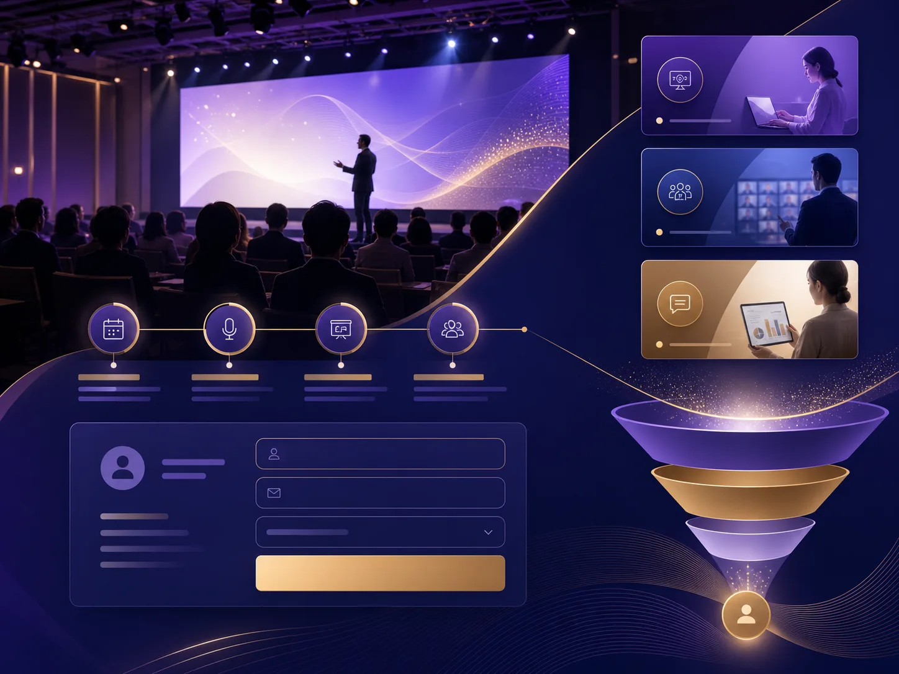

Industry Guide — Seminar
セミナー・説明会LPに必要な要素とは？申込までの導線を解説
セミナー・説明会LPは、開催日という締切のあるイベントに、迷わず申し込んでもらうための1ページです。この記事では、必要な要素、結論を先に伝えるべき理由、申込直前の離脱を防ぐ工夫を解説します。
セミナーLPとは何か？何を目的にするページか？
セミナーLPは、特定の開催日・特定の対象者に向けて「参加するかどうか」だけを判断してもらうための1ページです。会社案内や過去の活動全体を紹介するのではなく、この1回の開催に絞って情報を設計します。
通常のサービスLPと違い、開催日という締切があるため、申込の判断を先延ばしにされると、そのまま機会を逃してしまいます。「今すぐ判断してもらう」ことを前提に、情報の順番を組み立てる必要があります。
セミナー・説明会LPに必要な要素とは？
セミナーLPは「結論」「登壇者・信頼性」「当日情報・申込」の3ブロックで構成します。結論のブロックで参加メリットと開催日時を先に示し、興味を持った人が離脱する前に信頼性の裏付けを見せる順番にします。
| 要素 | 目的 | 含める内容の例 |
|---|---|---|
| 結論 | 参加して得られることを最初に言い切る | 参加メリット・対象者・開催日時と会場を一目で |
| 登壇者・信頼性 | 誰から学べるのかを示し、参加の価値を裏付ける | 登壇者の経歴・実績、過去開催の様子や声 |
| 当日情報・申込 | 参加をその場で決めてもらう | 日時・会場(またはツール)・料金・定員・申込フォーム |
なぜ結論を最初に伝えるべきなのか？
通常の物語のように「起・承・転・結」の順で背景から説明すると、参加メリットが伝わる前に離脱されてしまいます。セミナーLPでは、結論(参加して得られること)を最初に示し、その後で登壇者の信頼性や当日の詳細を補強する順番が有効です。
これは、セミナーへの参加を検討する人の多くが「忙しい時間を割く価値があるか」を最短で判断したいと考えているためです。背景や経緯を丁寧に説明したくなる気持ちは分かりますが、それは結論を伝えた後、登壇者・信頼性のブロックで補う形にします。
申込直前の離脱を防ぐには何が必要か？
日時・会場(またはオンラインツール)・料金・定員を、本文の途中ではなく申込フォームの直前に改めて明記することで、スケジュールの都合を確認しようとして離脱するのを防げます。
よくある離脱の原因は、「面白そうだけど、その日空いているか分からない」という一時保留です。開催日時を何度も曖昧なまま進めるのではなく、ページの早い段階と申込直前の両方で、同じ情報を繰り返し明記することが効果的です。
セミナーLPの記載項目チェックリスト
申込前に確かめたい項目がそろっているか、公開前に次の一覧で点検します。
- タイトル（誰向けの、何が分かるセミナーか）
- 日時と所要時間
- 開催形式（会場・オンライン・両方）
- 会場の住所と行き方、または視聴方法
- 参加費（無料の場合も明記）
- 定員と申込締切
- 対象者（こんな方におすすめ）
- 当日の内容（プログラム）
- 登壇者の紹介
- 持ち物・事前準備
- 申込方法と、申込後の流れ
- 主催者と問い合わせ先
- キャンセルの方法
- 個人情報の取扱い
上から順に並べる構成テンプレート
迷ったら、次の順番を基本にします。上から「何のセミナーか」「自分に関係があるか」「信頼できるか」「どう申し込むか」の順です。
- ファーストビュー（タイトル・日時・開催形式・参加費・申込ボタン）
- こんな方におすすめ（対象者の悩みを3〜5個）
- 参加すると分かること
- プログラム（時間割）
- 登壇者の紹介
- 開催概要（表にまとめる）
- よくある質問
- 申込フォーム
過去の開催実績や参加者の感想がある場合は、登壇者の紹介の後に置きます。無い場合は無理に作らず、プログラムを具体的に書くほうが信頼されます。
オンライン開催と会場開催で何が変わるか？
オンライン開催では「視聴方法と当日のつながり方」、会場開催では「場所と行き方」が、申込前の一番の不安になります。
オンライン開催で書くこと
使用するツール、視聴URLの届け方と届く時期、カメラ・マイクの要否、見逃し配信の有無、通信トラブル時の連絡先を書きます。
会場開催で書くこと
住所、最寄り駅からの行き方、受付開始時刻、駐車場の有無、持ち物、途中入退室の可否を書きます。
両方で開催する場合は、申込フォームで参加形式を選べるようにし、選んだ形式に合わせた案内メールを送ります。
申込フォームと自動返信メールの設計
フォームの項目は、当日の運営に必要なものだけに絞ります。氏名・メールアドレス・参加形式が基本で、会社名や電話番号は、必要な理由がある場合だけ追加します。
申込直後に届く自動返信メールには、日時、参加方法（会場の地図、または視聴URLが届く時期）、キャンセルの方法、問い合わせ先を入れます。「申し込めたのか分からない」状態は、当日の欠席や重複申込につながります。開催の前日に確認の案内をもう一度送ると、参加し忘れを減らせます。
制作例

上記は導線デベロッパーで作成したセミナー・説明会LPの制作例(デザインサンプル)です。実際の案件では、開催形式(会場かオンラインか)や参加費の有無に合わせて、構成を個別に設計します。
よくある質問
- 無料セミナーと有料セミナーでLPの作り方は変わりますか。
- 有料セミナーは「参加費に見合う価値があるか」を具体的に示す必要があり、費用対効果の説明が重要になります。無料セミナーは参加ハードルが低い分、対象者を明確にしないと関係のない人まで集まってしまう点に注意が必要です。
- オンライン開催と会場開催で構成は変わりますか。
- 会場開催は地図・アクセス・持ち物などの案内が必須になります。オンライン開催は使用ツール(Zoomなど)の操作案内や、当日参加できない場合の録画配布の有無を明記すると、申込の不安を減らせます。
- 登壇者の実績がまだ少ない場合はどうすればいいですか。
- 実績の数を強調するより、なぜこのテーマで登壇するのか、どんな経験からこの内容を伝えたいのかを具体的に語る方が、実績が少ない段階でも説得力を補いやすくなります。